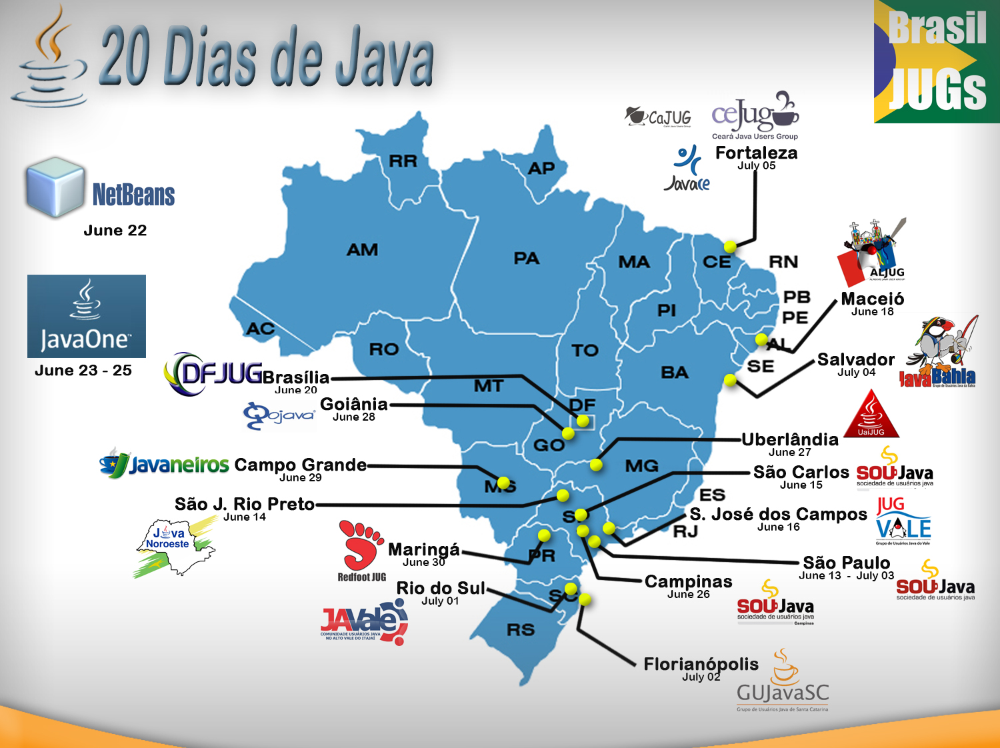
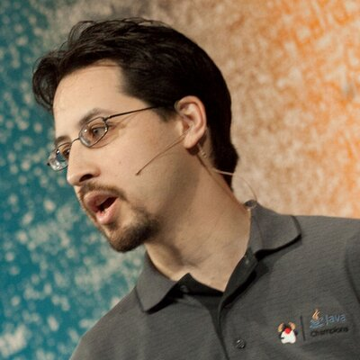

Sobre
Uberlândia vai ser uma das sedes do JUG Tour Brasil 2015.
Esse evento vai acontecer nas principais cidades brasileiras e faz parte das comemorações dos 20 anos de Java e do retorno do JavaOne ao país.
Nessa edição vamos contar com a participação de dois dos maiores evangelizadores Java no mundo.
Bruno Borges @brunoborges
Stephen Chin @steveonjava
Quando será:
Data: 27 de Junho de 2015
Horário: 15:00hs
Local: AUDITÓRIO 5R A e B, Campos Santa Monica - UFU - Campus Santa Mônica, Uberlândia/MG.
Todos os Jugs Participantes do Tour
Localização
Rua João Naves de Avila, 2121 - Santa Mônica. Uberlândia, Minas Gerais
Palestrantes
-
Bruno Borges @brunoborges
Gerente de Produtos da Oracle na linha Java EE como GlassFish e WebLogic. Profissional da área há 10 anos, atuou em empresas como EDS/HP, CETIP, Summa Technologies, CETIP, Neociclo e agora arquiteto de sistemas na wdev; desenvolve softwares e soluções em padrões de integração (EIPs), aplicativos Web e aplicativos Android. Participante de comunidades de software livre (RioJUG, SouJava, Apache Software Foundation, #horaextra), fundou o grupo Wicket em Português e contribui para projetos Open Source da ASF
-

Stephen Chin @steveonjava
Stephen Chin is a technical expert in RIA technologies, and Chief Agile Methodologist at GXS. He coauthored the Apress Pro JavaFX Platform title, which is the leading technical reference for JavaFX, and is lead author of the Pro Android Flash title. In addition, Stephen runs the very successful Silicon Valley JavaFX User Group, which has hundreds of members and tens of thousands of online viewers, and also is co-organizer for the Flash on Devices User Group. Finally, he is a Java Champion, chair of the OSCON Java conference, and an internationally recognized speaker featured at Devoxx, Jazoon, and JavaOne, where he received a Rock Star Award
Programação
| Horário | Atividade | Descrição |
|---|---|---|
| 27/06 14h00 até 15h00 - Credenciamento | ||
| 15h00 Auditório |
Desenvolva e Teste Aplicativos Java em Minutos no Oracle Java Cloud Service Bruno Borges |
Nesta sessão, você terá uma experiência em primeira mão com o desenvolvimento e teste de aplicativos Java no Oracle Java Cloud Service, o PaaS (Plataforma como Serviço) da Oracle. Venha conferir o Oracle Java Cloud Service de dois ângulos diferentes: como administrador, você irá provisionar e administrar um novo serviço em um amigável portal na nuvem. Como desenvolvedor, você irá implementar e testar um aplicativo da web usando o serviço de desenvolvimento baseado na nuvem, Oracle Developer Cloud Service. Saiba como acelerar seu ambiente de desenvolvimento e testes para aplicações Java com Oracle Cloud. |
| 17h00 Auditório |
Raspberry Pi with Java Stephen Chin |
Through the demonstration of working projects and source code, this session will show you how to use your Java programming skills to create hobby projects using Raspberry Pi as an inexpensive interface to the physical world. After this session, you will know how to start building your own embedded projects for the home or office and how to leverage your Java programming skills to connect it to the Internet of Things. Start building the future now with embedded Java 8 technology! |
| 19h00 Auditório | OpenTalk | Conversas, network, #horaextra |